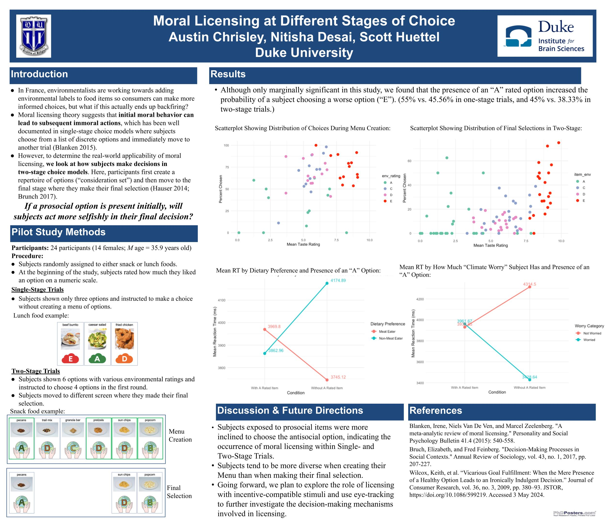

My senior research project uses a previous paradigm by Wilcox, Vallen, Block, & Wilcox (2009) but adds additional components. Specifically, instead of indulgent and healthy foods, subjects make decisions based on the environmental impact of the food options. Furthermore, a two-stage choice model is adapted to this study. We also use eye tracking to determine where the subjects look before and during their decision-making process. To analyze the data, I mainly used R to clean large datasets, run advanced regression analyses, and visualize key trends.
This project/thesis has an oral defense component.
During the completion of this project, I completed two summer internships: the Psychology Vertical Integration Program (2023) and the Summer Neuroscience Program (2024). Both of these were funded by the Duke University Department of Psychology & Neuroscience.
Citation: TBD
This project is a component of the Graduation with Distinction process at Duke.
Click here for more information about the project and analyses
This poster was presented at the Duke Institute for Brain Sciences. The poster summarizes the analysis of a pilot study, which eventually culminated in my Graduation with Distinction in Neuroscience senior thesis.
**Please note: this poster only summarizes the pilot study, and the data used here was not the data used in my thesis project.**
Created during my internship in the Cognitive Neuroscience Research Internship. This visual search was designed using Python. Click here for the GitHub Repo.
Conducted and published interviews with youth activists. During the interviews, activists discussed issues surrounding mental health, education, and gun violence. Here is the archive.
Publication:
Chrisley, A., Ely, V., Gabbidon, A., Genser, C., Hogan, W., Jacobs, J., Krovitz, S., Oliver, I., Patel, D., Perez, M., Quinlan, M., Relaford, L., Rievman, J., & Watts, B. (2022). Youth activist oral histories, 2010-2021. Duke Research Data Repository. https://doi.org/10.7924/r49g5s86k